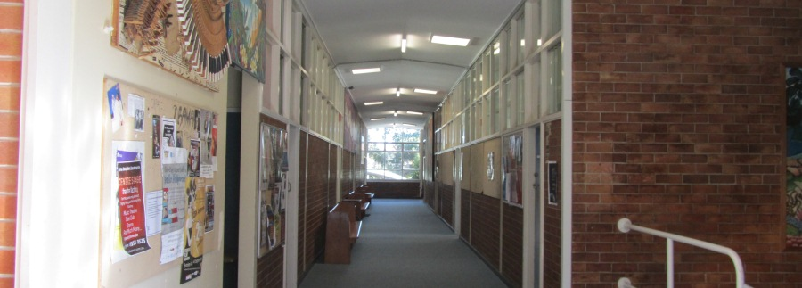

This page outlines the pattern of study for students at Port High. More detailed information can be obtained from your year adviser when it becomes available each year.
Year 7
Year 7 studies a set of mandatory units:
- English
- Mathematics
- Science
- Music
- Food/Industrial Technology
- Language
- PD/H/PE
- Art
- History
- Geography
Year 8
Year 8 studies all of the subjects studied in Year 7, along with two additional interest electives chosen by the student. One interest elective is studied per semester.
The 2013 interest electives are:
Semester 1
- Bakers Delight
- Caring for Farm Animals
- Art Metal
- Surfing/Bodyboarding
- First Aid
- Ceramics
Semester 2
- Bakers Delight
- Caring for Farm Animals
- International Cookery
- Toy Making
- Contact Sports
- Beach Watch
- Forensic Science
Year 9/10
In Year 9, three electives run alongside a set of mandatory subjects. The mandatory subjects are:
- English
- Mathematics
- Science
- PD/H/PE
- History
- Geography
Two electives run for two years, and are continued in Year 10. The remaining elective is a one-year course.
The electives for 2013 are:
Line A (2 Years)
- Drama
- Food Technology
- Industrial Technology - Engineering
- Marine and Aquatic Technology
- Physical Activity and Sport Studies
- Visual Art
Line B (2 Years)
- Agriculture
- Food Technology
- Industrial Technology - Timber
- Information Software Technology
- Music
- Physical Activity and Sport Studies
Line C (1 Year)
- Child Studies
- Food Technology
- Graphics Technology
- Physical Activity and Sport Studies
- Photographic and Digital Media
- Textiles Technology
All subjects studied in Year 9 (with the exception of the Line C elective) are continued into Year 10. Year 9 students also study ICT, and Year 10 students study career studies.
Year 11/12
Year 11 and 12 students are able to study most of the subjects offered as part of the
HSC syllabus. Subjects not available at Port High can usually be studied by distance education.